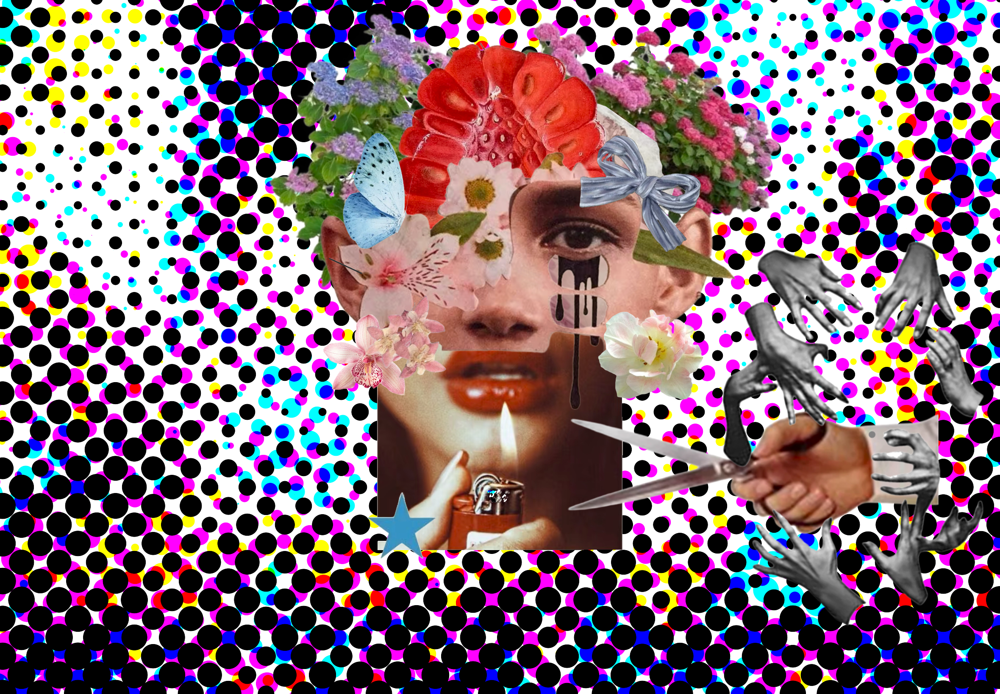
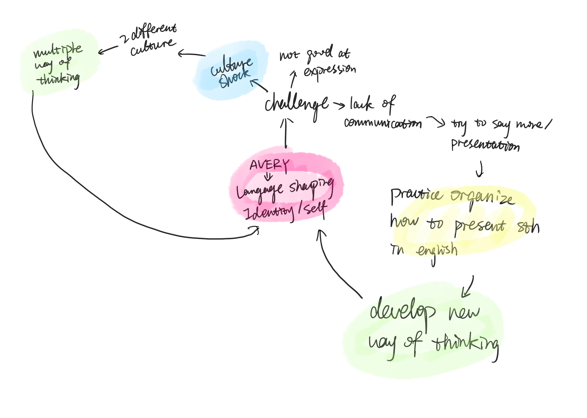

Web Project / 2024
Amplify Verbal Exchanges Rekindle Yourself
An early interactive website exploring how language systems shape self-identification, communication, and personal thought.
About the Project
Amplify Verbal Exchanges Rekindle Yourself is an early interactive web project built around language, self-identification, and digital storytelling.
The project uses the acronym AVERY as a conceptual structure. Each word becomes part of a larger system about communication, personal expression, and the way language shapes thought.
Through scene-switching interaction, layered visual collage, and short written fragments, the website explores how bilingual thinking can create shifts, errors, and new forms of self-understanding.
Tools: HTML, CSS, JavaScript, Procreate for digital collage
Inside the Website
The website invites viewers to switch between five words and scenes. Each scene becomes a small emotional and linguistic world, connecting interaction with memory, translation, and self-expression.

Process & Concept Notes
Early notes connected the project to self-identification, bilingual thinking, and the way language systems shape personal expression. These sketches helped turn the acronym AVERY into a structure for interaction and visual storytelling.
